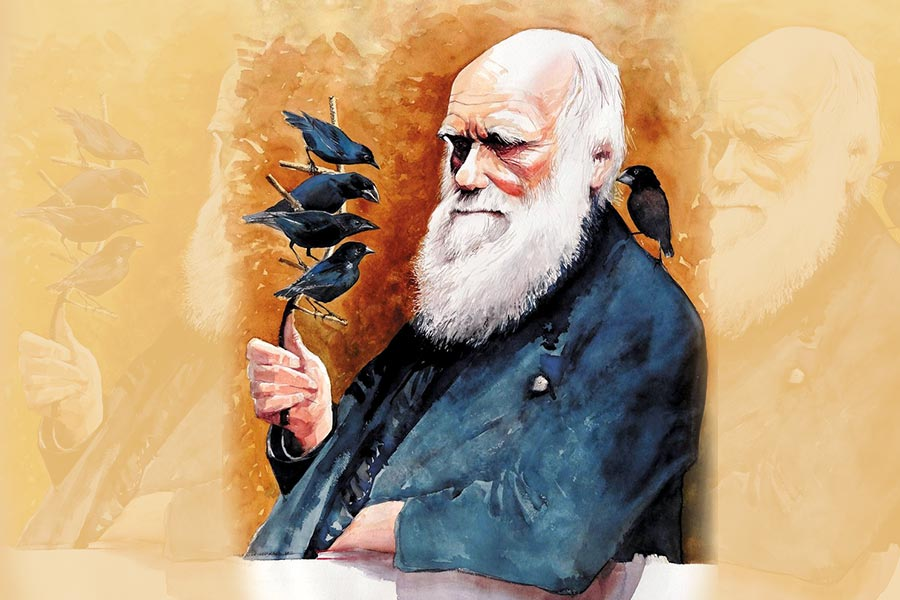
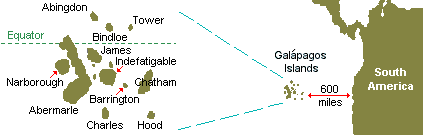
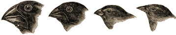
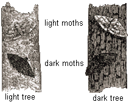

Refutando a Darwin

por Frank Thomas Smith
Sí, ya lo sé, Darwin es un ícono de la ciencia y quién soy yo para presumir que puedo refutarlo. Digamos tan solo que soy un tipo con ideas y opiniones propias que me gusta soltar con bastante frecuencia. Y…sí, veo verdaderas y enormes contradicciones lógicas en el darwinismo que ameritan ser refutadas de la manera más inteligente posible. Pero basta de disculpas.
En primer lugar, no deseo refutar la teoría de Darwin completamente. Admito, concuerdo incluso, que existe la evolución de las especies y admiro el gran logro de Darwin en cuanto a la observación e ilustrada descripción del proceso evolutivo. La molesta piedra que me hace trastabillar es su conclusión de que las modificaciones que se producen son aleatorias, o accidentales. Tomemos un par de los ejemplos más conocidos:

Durante su viaje a Sudamérica a bordo del Beagle, Darwin pasó dos semanas en las Islas Galápagos donde observó a los pinzones que vivían en las diferentes islas. Los que tenían picos más adecuados para comer cactus obtenían más alimento y, de ese modo, sobrevivían en los entornos áridos, mientras que aquellos con picos más adecuados para extraer néctar de las flores o para comer semillas eran los que sobrevivían en otros entornos debido a esas obvias ventajas. En un principio, Darwin llamó a este proceso “selección natural”, pero más tarde, siguiendo a Herbert Spencer, también lo denominó “supervivencia del más apto”. Ahora bien, la cuestión es si las variaciones en la población de pinzones fueron causadas por el entorno o si ocurrieron primero y las aves involucradas se encontraron ya adaptadas al nuevo entorno – “nuevo” porque se suponía que originariamente habían emigrado desde el continente, donde los pinzones observados no presentaban ninguna de las variaciones de las Galápagos.

Darwin concluyó que no era el entorno el que causaba las variaciones en las poblaciones de pinzones. Pensaba que las variaciones ya existían y que la “naturaleza” seleccionaba las formas más adecuadas de pico para los respectivos entornos naturales y desechaba las que no tenían posibilidades de éxito. (Lamarck, en cambio, pensaba que primero el entorno modificaba la forma de los individuos y que esas modificaciones adquiridas eran luego transmitidas por herencia.) Más abajo volveremos sobre esta importante diferencia.
En 1798, Thomas Malthus, sacerdote y economista inglés, calculó que las poblaciones humanas se duplicarán cada 25 años a menos que no haya alimento suficiente para todos, una forma bastante brutal de control “natural” de la natalidad. Cuando Darwin leyó el ensayo de Malthus, pensó que todas las plantas y los animales potencialmente han de aumentar sus poblaciones a menos que sean constantemente controlados por los predadores, las enfermedades, y la escasez de alimento, agua y otros recursos esenciales para la supervivencia. En otras palabras: supervivencia del más apto a través de la selección “natural”, según la cual aquellos que tengan menor probabilidad de extinguirse tendrán mayor probabilidad de transmitir sus rasgos a la siguiente generación de aves, ratones, polillas y hombres.
Un caso de evolución resultante de la denominada selección natural fue descubierto entre las mariposas de los abedules o polillas moteadas que habitaban en los alrededores de las ciudades industriales en Inglaterra durante el siglo XIX. Las polillas varían en coloración desde las claras a las oscuras. El hollín y el humo provenientes de las calderas alimentadas con carbón mataban el liquen de los árboles y oscurecían sus cortezas. Según la teoría, cuando las polillas se posaban sobre esos árboles y otras superficies ennegrecidas, las polillas de color oscuro eran más difíciles de detectar por parte de las aves que las comían y, por consiguiente, alcanzaban la edad de reproducción con mayor frecuencia que las otras. Generación tras generación, el entorno continuó favoreciendo a las polillas oscuras. Y éstas, como resultado, se volvieron progresivamente más comunes. Hacia 1895, 98% de las polillas en las cercanías de las ciudades inglesas como Manchester eran mayormente negras. Desde la década del 50, las medidas de control de la contaminación han reducido significativamente la cantidad de contaminantes pesados en el aire que les llega a los árboles. En consecuencia, el liquen ha vuelto a crecer y ha aclarado el color de los árboles. Además, los edificios que estaban ennegrecidos fueron limpiados lo que también aclaró su color. Según la teoría darwinista, ahora la selección natural favorece a las variedades claras de la polilla, de modo que éstas se han vuelto más comunes. Esta tendencia ha sido bien documentada por los estudios de campo llevados a cabo entre 1959 y 1995 por Sir Cyril Clarke de la Universidad de Liverpool. El mismo patrón de cambio evolutivo del color de las alas de las polillas en respuesta a la incrementada y luego disminuida contaminación ambiental ha sido minuciosamente documentada para la zona rural de los alrededores de Detroit, Michigan, por otros investigadores.

Aunque es claro que, en el curso de los últimos doscientos años, ha habido una evolución en la coloración de las polillas debida a la ventaja del camuflaje, es importante tener en cuenta que este relato de la selección natural en acción es incompleto, porque pueden haber intervenido factores adicionales. Es más, uno puede preguntarse si acaso las polillas de color claro intentaron posarse en los árboles sin liquen o si las oscuras tuvieron alguna atracción especial por los árboles más claros. O si a las aves predadoras realmente las engaña el color de las polillas.
Lo que más me incomoda, sin embargo, es la suposición de que las variaciones en la forma o el color de las criaturas en cuestión se produjeron antes de su residencia en entornos favorables. Si tal fuera el caso, nuestra misteriosa “selección natural” tendría que haber sabido de antemano que un grupo selecto de la especie tenía intención de emigrar a los ambientes que más favorecían a su variación, y les otorgó las necesarias visas de forma de pico o de color. Por supuesto, los darwinistas han de negar esto – pero ¿qué otra explicación pueden dar? Ah, sí: que había una previa mutación accidental que por casualidad correspondía al futuro hogar extranjero. Que algo así pueda haber sucedido algunas veces es al menos plausible, pero que haya sucedido innumerables veces en la historia evolutiva de la tierra es tan probable como que un mono que presiona al azar las teclas de una computadora eventualmente vaya a escribir la Biblia si se le da el tiempo suficiente. La única evidencia real en los dos casos mencionados más arriba es que los picos de ciertos pinzones de las Galápagos son ciertamente adecuados para su ambiente natural, y que las polillas oscuras viven en árboles de corteza oscura y las claras, en los de corteza clara. El por qué y el cómo, sin embargo, son pura especulación. Ingeniosa, sí, pero no comprobada. Además, si las variaciones se produjeron después de que las criaturas se mudaran a nuevos lugares, la teoría de Darwin se desmorona como un castillo de naipes mal construido, porque en ese caso se conoce la causa y ésta no es la selección natural sino el medio ambiente.
Pasemos ahora al hombre, el caso que más nos interesa, porque…bueno…porque se trata de nosotros! Los animales existentes que más se parecen al hombre son los simios. Tienen dos piernas y dos brazos – aunque los brazos también funcionan como piernas –, manos que pueden asir objetos y acicalar a sus congéneres; cuidan a sus crías. Viven mayormente en los árboles. Aunque poseen cierta inteligencia limitada, no pueden hablar, lo que plantea la cuestión sobre su capacidad para pensar o sobre si su inteligencia es equivalente al instinto. La teoría darwinista es que un día uno de ellos, a causa de una variación accidental (¿en el cerebro?), decidió bajar al suelo y quedarse allí – aunque es difícil de ver la ventaja práctica de esto. Luego otra mutación transformó los gruñidos en palabras y produjo la bipedestación. Hasta que, por fin, ¡voilà!: un fulano o una fulana de verdad. (Perdón por la ironía, pero todo el asunto es tan simplista que no lo puedo evitar.) Un problema que veo es: ¿Por qué los simios no continúan evolucionando y se hacen más humanos? Además, ¿dónde está el eslabón perdido entre ellos y el hombre? Una respuesta posible para la primera pregunta es que la evolución es demasiado lenta para ser notada; y, para la segunda, que hay vestigios óseos de proto-humanos, como, especialmente, los neandertales. Pero los neandertales coexistieron durante miles de años con los humanos. ¿Cómo, entonces, pudo un grupo de compañeros – o más probablemente enemigos – surgir del otro por evolución? ¿Hubo cruza entre las especies? ¿Quién sabe? Pero incluso si la hubo, no se trata de evolución sino de procreación. Una idea más moderna es que esas especies proto-humanas eran ramas que se extinguieron sin poder continuar su evolución. Esto suena eminentemente razonable, pero, nuevamente, es una conjetura.
Según Karl Popper, “la señal de una teoría científica es si hace predicciones que podrían en principio servir para falsificarla”. En otras palabras: ¿puede ser falsificada? Si aceptamos esta definición, el darwinismo no es ni siquiera una teoría respetable porque no puede ser falsificada. Bueno, algunos de sus elementos pueden serlo. Se han encontrado huesos falsos para ensalzar la reputación de algún científico. Pero no estoy refutando la evolución como tal, sino sólo el aspecto filosófico, especulativo, el cómo y el por qué. No hay forma de falsificar el concepto de “selección natural”, que de todas maneras es una mera metáfora: ¿cómo puede la “selección” ocurrir naturalmente?, es decir, ¿cómo puede algo ser “seleccionado” si no es conscientemente? (Ver los artículos de Don Cruse sobre este tema en Archives)
No estoy ofreciendo una teoría alternativa, sólo intentando refutar a Darwin calificando a su teoría de especulativa y, por lo tanto, no comprobada y no científica. Probablemente otros lo han hecho mejor, pero en la actualidad el darwinismo es monarca absoluto y cualquiera que lo cuestione es etiquetado como creacionista o ingenuo. Concuerdo con el filósofo Thomas Kuhn que afirmó que “la historia de la ciencia está jalonada de violentas revoluciones intelectuales que tiran abajo largos periodos de respuestas conservadoras…y por movimientos opuestos en los que la investigación que cuestiona las teorías vigentes es ridiculizada como especulación delirante e inútil.” De modo que no hay una evolución gradual del pensamiento científico, sino más bien saltos abruptos de genialidad que echan por tierra lo que antes era considerado verdad sagrada.
Tengo confianza en que, así como Copérnico fue destronado por Aristóteles y Ptolomeo, y Einstein hizo tambalear el universo de Newton, alguien aparecerá tarde o temprano para derrocar a la ortodoxia darwinista.